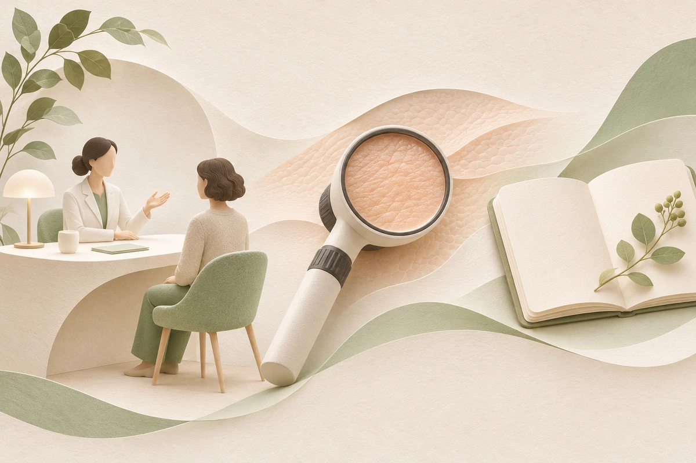

O que mudou?
Anote quando percebeu as manchas ou a mudança de textura e quais dúvidas gostaria de esclarecer. Fotos anteriores, se você já tiver, podem ajudar a contar essa história.
Consulta dermatológica em Goiânia para investigar mudanças na pele e orientar os próximos cuidados.
Dermatologista em Goiânia. Informa formação médica e residência na Escola Paulista de Medicina da Unifesp em seu perfil profissional.
Alana Luísa Calixto Carlos da Silva · Médica · CRM-GO 29886 · RQE 17522
Identificação profissional informada nas fontes consultadas.
O que você percebe no espelho e o que vive na rotina podem entrar na mesma consulta.
Anote quando percebeu as manchas ou a mudança de textura e quais dúvidas gostaria de esclarecer. Fotos anteriores, se você já tiver, podem ajudar a contar essa história.
Leve os nomes dos produtos que usa e conte como organiza seus cuidados. A conversa começa com o que já faz parte do seu dia.
Mudanças na pele, desconfortos e dúvidas sobre a rotina de cuidado.
Um espaço para conversar sobre as alterações que você tem percebido.
Produtos em uso, hábitos e o que vale ajustar depois da avaliação.
Indicações, alternativas e próximos passos são conversados na consulta.
Compartilhe o que motivou a consulta e o que já tentou até aqui.
Converse sobre seu histórico e suas prioridades.
Alinhe as opções e como será o acompanhamento.
Confirme horários e unidade com a equipe.
Reels publicados no perfil profissional.

Consulte horários e localização pelo canal de atendimento indicado no perfil profissional.
Abra o canal de agendamento e confirme disponibilidade com a equipe.
Se tiver, leve exames anteriores e uma lista dos produtos e medicamentos que usa.
O perfil profissional indica atendimento em Goiânia. Confirme a unidade com a equipe ao agendar.